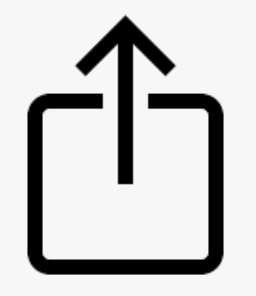

🌳🪴🌿Xcellent MFG Catalogue🧤🏕️🏡
💡 (EN)Add this page to your home screen for future access:
- iPhone: Tap  → Add to Home Screen
- Android: Tap ⋮ → Add to Home Screen
💡 (DE)Fügen Sie diese Seite Ihrem Startbildschirm hinzu, um später schnell darauf zuzugreifen:
- iPhone: Tippen Sie auf → Zum Startbildschirm hinzufügen
- Android: Tippen Sie auf ⋮ → Zum Startbildschirm hinzufügen
💡 (ES)Agregue esta página a su pantalla de inicio para acceder rápidamente en el futuro:
- iPhone: Toque → Agregar a pantalla de inicio
- Android: Toque ⋮ → Agregar a pantalla de inicio